We can conveniently work in the unit square
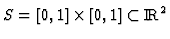
for the space X. The IFS under consideration is appropriately scaled to fit into S.In practice, we are dealing with approximations of fractals rather than with fractals themselves. We work not in the space X but in its pixel representation
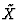
and, therefore, we deal not with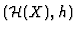
but with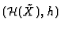
and, correspondingly, with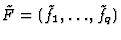
and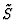
. In what follows under S, F and f we mean ,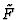
and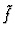
, respectively.One way to build a fractal [4], specified by IFS, looks as follows. We take an initial
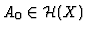
and define
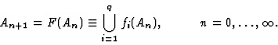 |
(5) |
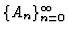
converges to AF in the Hausdorff metric. We do N iterations of F. When the number N of iterations becomes great enough, we have an approximation
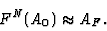 |
(6) |
Barnsley's deterministic algorithm [2] for building a fractal implies the calculation of each
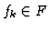
for every point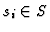
,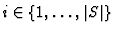
for every iteration. When we wish to rebuild the fractal, we have to repeat the whole above procedure.